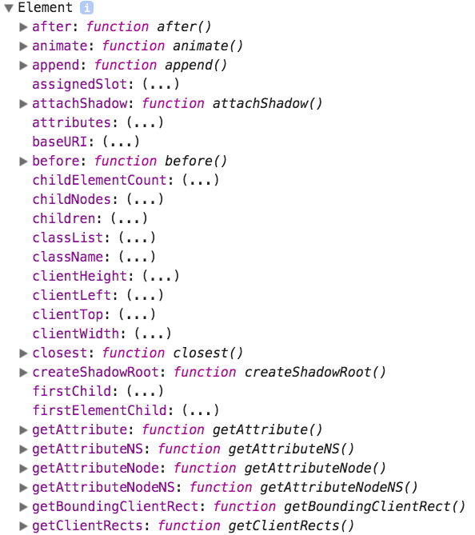

DOM 的标准规范中提供了 Element 对象，该对象提供了 HTML 页面中所有元素所具有的属性和方法。
我们都知道 DOM 标准规范中提供了 Node 对象，主要是依靠 DOM 节点树结构访问和更新 HTML 页面的内容。而 DOM 标准规范中提供了 Element 对象，主要是依靠 DOM 元素树结构访问和更新 HTML 页面的内容。
值得注意的是: 所有的 HTML 页面的元素都是 HTMLElement 对象，而这个对象又是继承于 Element 对象的。
Element 对象的作用
HTML 页面中的标签，既是元素节点，又是元素。
如果我们将 HTML 页面中的标签当做元素节点的话，就是利用 DOM 节点树结构进行解析和操作。但是，有些情况利用 Node 对象实现比较复杂，例如属性节点的操作，而使用 Element 对象提供的属性和方法相对会简单一些。
我们可以简单地理解 Element 对象是 Node 对象的补充。当然，这种理解并不准确！
通过 Element 对象，我们可以实现遍历元素、属性操作等操作。而这些操作也正是我们要学习 Element 对象的属性和方法。
测试 Element 对象
由于 Element 对象是 DOM 底层封装的对象，所以我们并不能通过直接打印 Element 对象来查看其属性或方法。 而是要通过打印 Element 对象的 prototype 原型属性来查看其属性或方法。
console.log(Element.prototype)
运行 HTML 页面后，打开 开发者工具，我们可以看到以下内容:

上面运行后的结果只是部分内容，并不是全部内容。请自行测试！